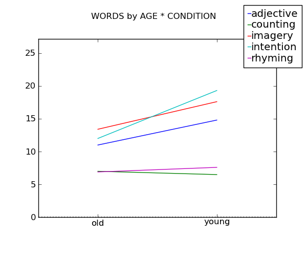
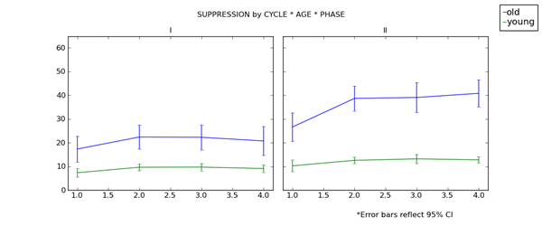
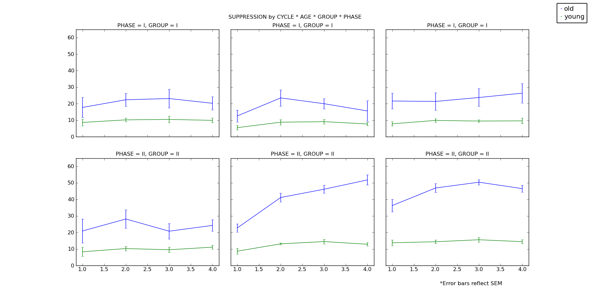

Produces interaction plots from the specified parameters
Two argumennts are required. The first specifies the dependent variable and the second specifies the variable to use on the x-axis.
This example also specifies that the ‘CONDITION’ factor should be seperated.
>>> df=DataFrame()
>>> df.read_tbl('data/words~ageXcondition.csv')
>>> df.interaction_plot('WORDS','AGE',
seplines='CONDITION')
produces ‘interaction_plot(WORDS~AGE_X_CONDITION).png’
The yerr keyword controls the errorbars that are placed on the plot. It can be None, a float, ‘ci’, ‘stdev’, or ‘sem’.
‘ci’ => 95% confidence intervals
>>> df=DataFrame()
>>> df.read_tbl('data/words~ageXcondition.csv')
>>> df.interaction_plot('WORDS','AGE',
seplines='CONDITION',
yerr='ci')
produces ‘interaction_plot(WORDS~AGE_X_CONDITION,yerr=ci).png’
.png)
If the data reflect a repeated measures design the error bars found by interaction_plot() will actually be conservative due to the fact they do not take into account within-subject variability. [1], [2] .
In such circumstances the recommended method for constructing interaction plots is to run an analysis of variance using Anova and use Anova. plot(). The Anova class will calculate the appropriate error bars based on the specified main effect or interaction. By default it uses the highest order main-effect/interaction specified by the factors of xaxis, seplines, sepxplots, and sepyplots.
Here is an example of how you would go about doing this.
>>> df=DataFrame()
>>> df.read_tbl('data/words~ageXcondition.csv')
>>> aov = df.anova('WORDS', wfactors=['AGE','CONDITION'])
>>> aov.plot('WORDS','AGE', seplines='CONDITION',
errorbars='ci', output_dir='output')
produces ‘interaction_plot(WORDS~AGE_X_CONDITION,yerr=0.319836724826).png’
.png)
>>> df=DataFrame()
>>> df.read_tbl('data\suppression~subjectXgroupXageXcycleXphase.csv')
>>> df.interaction_plot('SUPPRESSION','CYCLE',
seplines='AGE',
sepxplots='PHASE',
yerr='ci')
produces ‘interaction_plot(SUPPRESSION~CYCLE_X_AGE_X_PHASE,yerr=ci).png’
>>> df=DataFrame()
>>> df.read_tbl('data\suppression~subjectXgroupXageXcycleXphase.csv')
>>> df.interaction_plot('SUPPRESSION','CYCLE',
seplines='AGE',
sepxplots='GROUP',
sepyplots='PHASE',
yerr='sem')
produces ‘interaction_plot(SUPPRESSION~CYCLE_X_AGE_X_GROUP_X_PHASE,yerr=sem).png’
| [1] | Loftus, G. R., & Masson, M. E. (1994). Using confidence intervals in within-subject designs. Psychonomic Bulletin & Review, 1(4), 476-490. |
| [2] | Masson, M. E. J., & Loftus, G. R. (2003). Using confidence intervals for graphically based data interpretation. Canadian Journal of Experimental Psychology, 57(3), 203-220. |